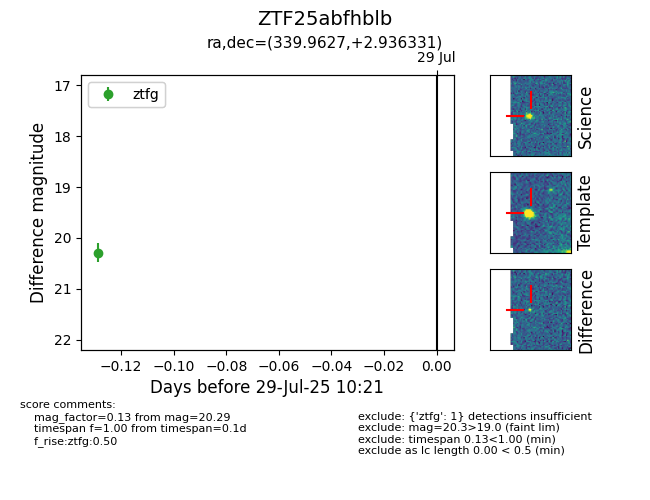

Target ZTF25abfhblb at 2025-07-29 10:21, see:
FINK: fink-portal.org/ZTF25abfhblb
Lasair: lasair-ztf.lsst.ac.uk/objects/ZTF25abfhblb
ALeRCE: alerce.online/object/ZTF25abfhblb
alt names
ZTF25abfhblb (ztf,fink)
coordinates:
equatorial (ra, dec) = (339.9627,+2.93633)
galactic (l, b) = (71.2047,-46.29767)
photometry
last ztfg=20.29
1 ztfg detections
